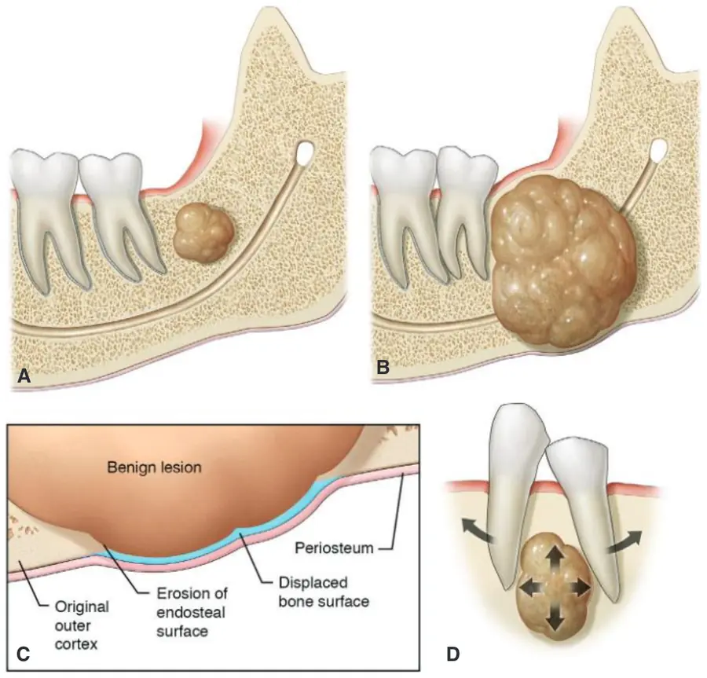
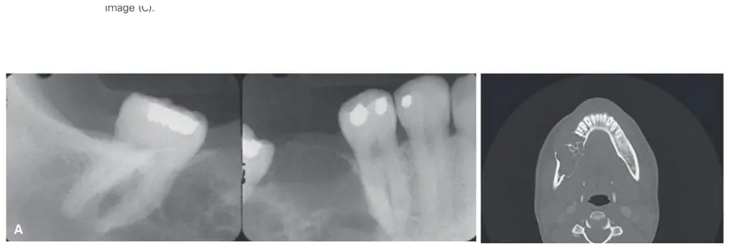

نسخه استخراجشده؛ ترجمه یا تأیید علمی انجام نشده است. وضعیت: captured
پیش از هر تومور خاصی، دو قاعدهی عمومی رفتار نئوپلاسم خوشخیم را حفظ کن — چون در تمام این یونیت به کارت میآیند:

حالا آملوبلاستوما — شناختهشدهترین نئوپلاسم ادنتوژنیک. منشأش بقایای لامینا دنتال و ارگان مینا است. و نکتهای که پیشتر در کیستها هم دیدی: واریانت یونیسیستیک میتواند از درون پوشش یک کیست دنتیجروس پدید بیاید.
سن: دامنهی بسیار وسیع — از ۳ تا بالای ۸۰ سال — ولی بیشتر بیماران ۲۰ تا ۵۰ سالهاند و میانگین سن کشف حدود ۴۰ سال. واریانت یونیسیستیک در افراد جوانتر دیده میشود.
و یک عدد بالینی: تورم گونه، لثه یا کام سخت، شکایت اصلی ۹۵٪ آملوبلاستوماهای درماننشدهی ماگزیلا بوده است. مخاط روی توده طبیعی است و بیشتر بیماران درد یا تغییر حسی گزارش نمیکنند.
و چهار الگوی تصویری کلاسیک آملوبلاستوما:
و یک هشدار واژگانی که بهراحتی اشتباه میشود: «هرچند آملوبلاستومای یونیسیستیک یک موجودیت تکحفرهای است، ظاهر تکحفرهای لزوماً بازتاب یک آملوبلاستومای یونیسیستیک نیست.» یعنی ظاهر تصویری و زیرگروه بافتشناسی را یکی نگیر.
محل — این عدد را حفظ کن: ۸۰٪ آملوبلاستوماها در ناحیهی مولر و راموس مندیبل پدید میآیند. در ماگزیلا بیشتر در ناحیهی مولر سوم، زیر کف سینوس، یا قدامیتر کنار کف بینی.

حاشیه: واضح، ولی «ضخامت کورتکس و پیوستگی آن بسته به میزان تهاجمی بودن هر نئوپلاسم متفاوت است» — نئوپلاسم سریعالرشدتر، کورتکس کمتر قابل رؤیت دارد. حاشیهها اغلب منحنیاند، و ضایعهی کوچک میتواند از یک کیست غیرقابل تفکیک باشد.
و مهمترین نشانهی اتساع در این درس — «پوستهی تخممرغ»: تصویر اکلوزال مقطعی میتواند الگوی رشد هممرکز را با نازک شدن کورتکس مجاور نشان دهد، بهطوریکه تنها یک «پوستهی تخممرغ» از استخوان باقیمانده در سطح میماند.
و یک سرنخ محلی با ارزش تشخیصی بالا: اگر ناحیهی رتروملار یا مرز قدامی راموس مندیبل پرفوره یا از دست رفته باشد، «احتمال آملوبلاستوما بهشدت افزایش مییابد».
افتراقها — و هر کدام یک جداکننده دارد:
و انتخاب روش تصویربرداری: اگر تشخیص روی تصویر تخت گذاشته شد، MDCT بهشدت توصیه میشود — چون گسترهی آناتومیک و اثر بر مرزهای استخوانی و بافت نرم را دقیقتر نشان میدهد و گسترش تومور به فضاهای مجاور را آشکار میکند. اگر گسترش بافت نرم وسیع باشد، MRI تصاویر برتری میدهد.
و درمان: شایعترین روش رزکشن جراحی en bloc است. ماگزیلا معمولاً تهاجمیتر درمان میشود، چون آملوبلاستوما تمایل دارد به ساختارهای حیاتی نزدیک قاعدهی جمجمه دستاندازی کند. و نرخ عود در بیماران مسنتر و در ضایعات مولتیلوکولار بالاتر است.
نوع سؤال: ساخت کلمه · 8 خانه
حروف منبع: ن · ر · س · ج · و · ی · د · ت